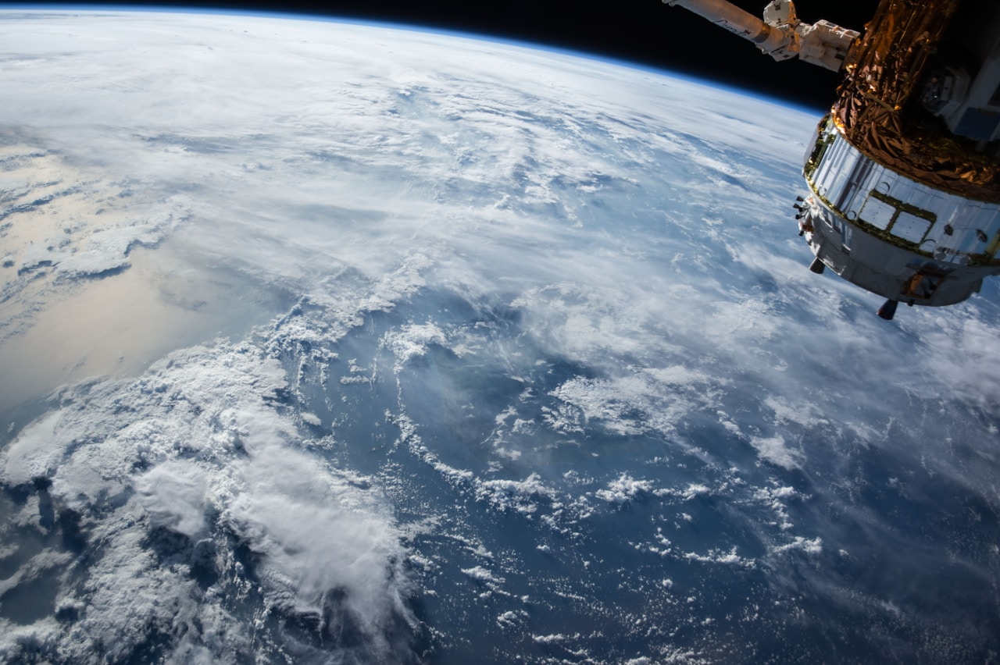

My Project on Climate Change

Welcome to my website for the Web Design and Development unit.
I chose to do my project on climate change because it's something that I think everyone should care more about. Climate change refers to long-term shifts in temperatures and weather patterns across the globe. These shifts can be natural, but since the 1800s, human activities have been the main driver of the problem. This is mostly because of the burning of fossil fuels (like coal, oil, and gas), which produces heat-trapping gases.
I hope you find the information on this site useful and that it helps you understand why we need to act now.
On this site, you'll find pages about the science behind global warming, the causes, and what we can do to solve it.
Some of the key issues I explore are:
- Global Temperature Rise
- Warming Oceans
- Shrinking Ice Sheets
- Glacial Retreat
Why It Matters
The impacts of climate change are already being felt across the globe.
From extreme weather events like hurricanes and droughts to the loss of biodiversity, the consequences are profound and require urgent global action.